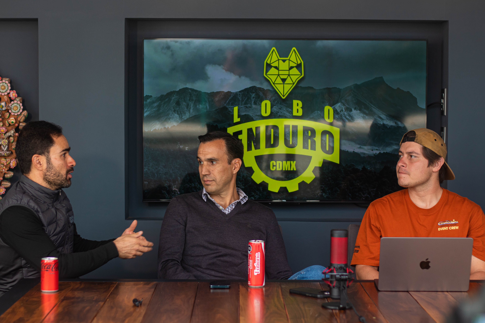
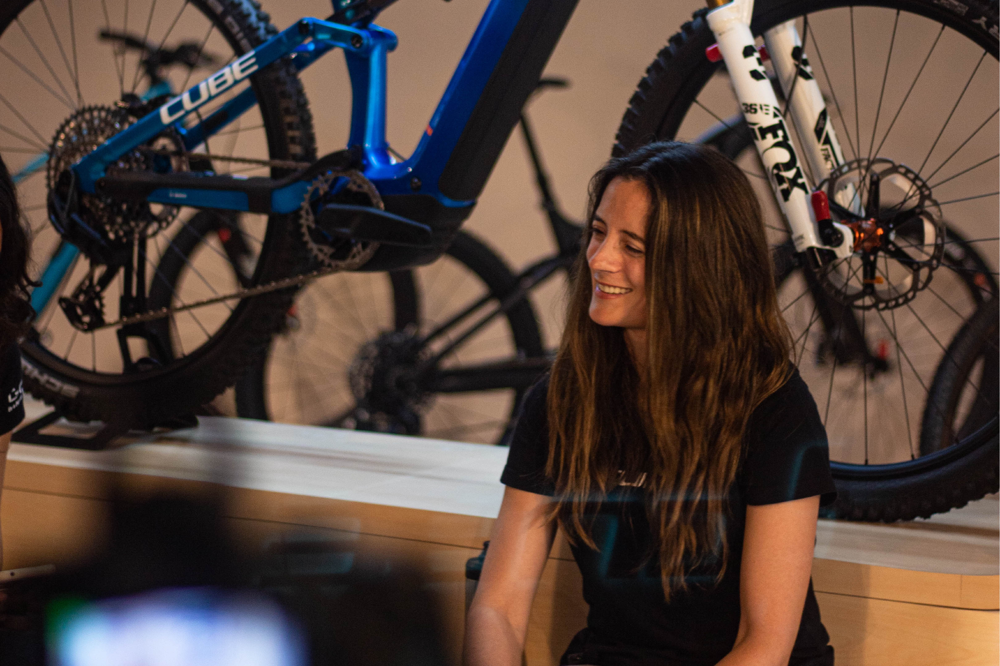

Tu espacio dentro del podcast
Descubre cómo podemos impulsar tu proyecto con La Teoría del Flow.
En esta sección encontrarás todas las opciones para patrocinar un episodio, aparecer en menciones especiales o activar una campaña de marketing dentro de nuestro universo MTB. Somos un podcast para riders que busca conectar con audiencias reales en México y América Latina.
Nuestro equipo te acompaña en la propuesta de contenido, la difusión en redes, la cobertura de eventos y la activación de experiencias en vivo. Si buscas visibilidad auténtica y una audiencia apasionada por la montaña, este servicio está hecho para ti.

Paquetes de contenido
-
Episodio patrocinado — $5,000 MXN
Tu marca, producto o servicio con presencia en un episodio de La Teoría del Flow. Mención orgánica, integrada naturalmente a la conversación — sin guión forzado, sin publicidad obvia. El tipo de contenido en el que nuestra comunidad confía.
-
Cobertura de evento — $3,000 MXN + viáticos
Vamos a tu evento y lo documentamos en tiempo real. Vlogs, historias, cobertura en vivo y promoción antes, durante y después. Los viáticos de traslado, hospedaje y alimentación corren por cuenta del cliente.
-
Carpa de atletas — $6,500 MXN + viáticos
Un espacio exclusivo para riders en tu evento — con bebidas, ambiente y la presencia de La Teoría del Flow como respaldo. Una experiencia que eleva el nivel de cualquier competencia. Los viáticos de traslado, hospedaje y alimentación corren por cuenta del cliente.
-
Flow a primera vista — $1,000 MXN
El primer contacto con tu producto. Reacciones reales, sin editar demasiado. La comunidad quiere ver qué sentimos cuando lo agarramos por primera vez — el peso, los detalles, los acabados. Honesto y directo.
-
Bikecheck — $1,000 MXN
Un recorrido detallado por cada componente de tu bici. Horquilla, transmisión, frenos, geometría. El contenido que busca cualquier rider que está considerando comprarla.
-
Mini shredit — $1,000 MXN
Tomas rápidas rodando, con buena edición y música. Sin explicaciones — pura vibra. El formato que más se comparte y que mejor representa el alma de una bici en movimiento.
-
Vlog de aventura — $1,000 MXN + viáticos
Un día completo rodando con tu producto en trail real. El contexto, la experiencia, los momentos entre bajadas. Contenido que conecta emocionalmente y muestra tu bici en su hábitat natural. Los costos de la aventura — traslado, entrada al trail o cualquier gasto del día — corren por cuenta del cliente.
